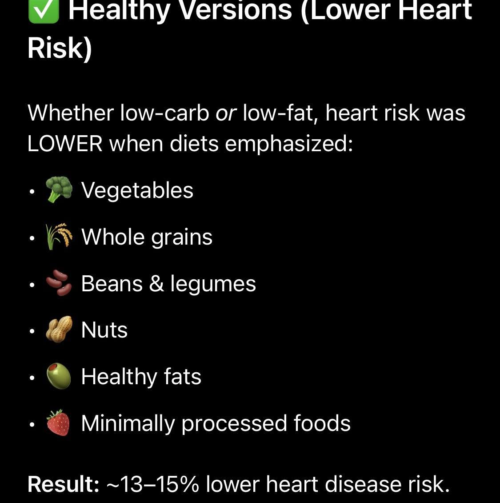
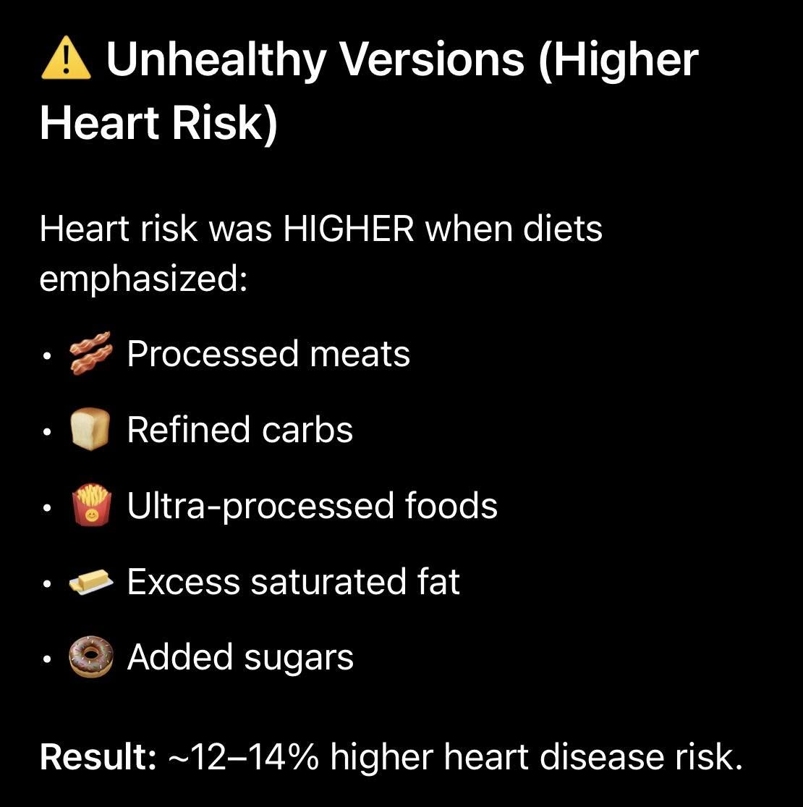
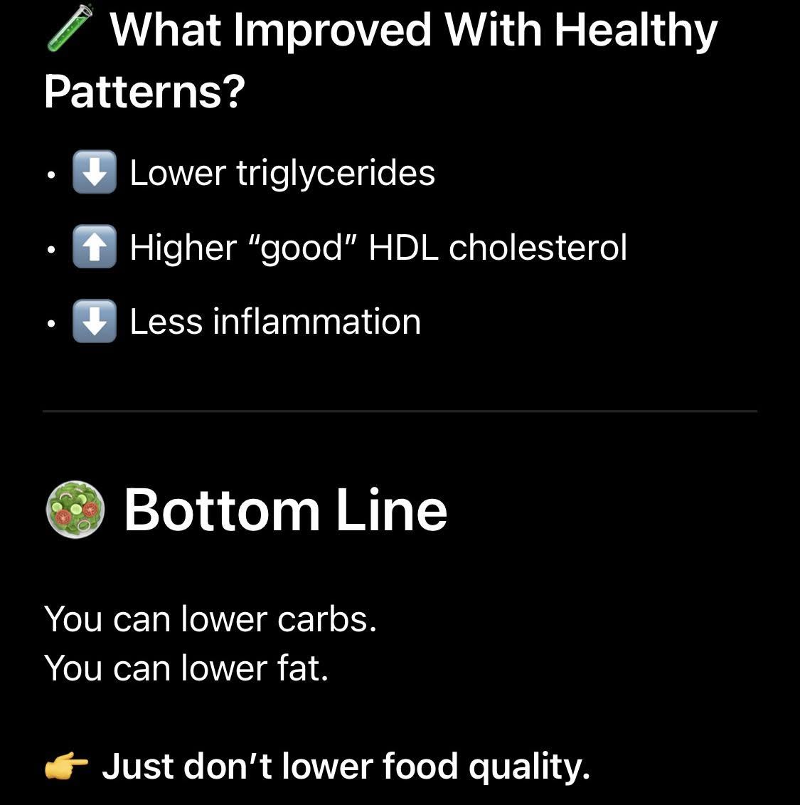

When it comes to heart disease risk, the quality of the macronutrients (fat, carbs, protein) seems to matter a lot more than the proportions.
Previous post on this same study:
↪ Harvard: macronutrient quality, not carb-versus-fat ratio, determines heart disease risk
#hnsHD #hpfsHD #harvardHD #proteinHD #carbsHD #fatHD #lowfatHD #lowcarbHD
Low Carb vs Low Fat? New data published in the Journal of the American College of Cardiology, suggest that diet quality matters more than composition when it comes to reducing coronary heart disease risk.
Researchers followed ~200,000 U.S. adults for up to 30+ years from:
- Health Professionals Study
- Nurses’ Health Study
- Nurses’ Health Study II
They looked at:
- Low-Carbohydrate Diets (LCD)
- Low-Fat Diets (LFD)
- Different versions of each diet:
- 🥩 Animal-based
- 🌱 Plant-based
- ✅ “Healthy” (whole, minimally processed foods)
- ⚠️ “Unhealthy” (refined carbs, processed meats, etc.)
They tracked who developed coronary heart disease (CHD).
⸻
❤️ What Did They Find?
Over 5.2 million person-years of follow-up:
20,033 cases of CHD were documented.
🥦 Healthy Versions → LOWER Heart Risk
- Healthy Low-Carb → ~15% lower CHD risk
- Healthy Low-Fat → ~13% lower CHD risk
- Plant-based versions of either diet were protective
🥓 Unhealthy Versions → HIGHER Heart Risk
- Unhealthy Low-Carb → ~14% higher CHD risk
- Unhealthy Low-Fat → ~12% higher CHD risk
⚖️ Key Takeaway:
It wasn’t carbs vs fat that mattered most —
it was food quality.
⸻
🧬 What About Blood Markers?
Healthy versions of both diet types were linked to:
- ⬇️ Lower triglycerides
- ⬆️ Higher HDL (“good cholesterol”)
- ⬇️ Lower inflammation (hs-CRP)
- Favorable metabolite patterns (including ↑ 3-indolepropionic acid and ↓ valine)
Unhealthy patterns showed the opposite.
⸻
🧠 What This Means for Patients
You can lower carbs.
You can lower fat.
But if the diet is built on:
- Processed meat
- Refined grains
- Added sugars
- Ultra-processed foods
👉 Heart risk goes up.
If it’s built on:
- Vegetables
- Whole grains
- Nuts
- Legumes
- Unsaturated fats
👉 Heart risk goes down.
⸻
📌 Bottom Line
Low-carb and low-fat diets can both support heart health —
but only when they’re high-quality.
It’s not about macronutrient wars.
It’s about food quality first.
#diet #LowCarb #LowFat #nutrition #heart #health



